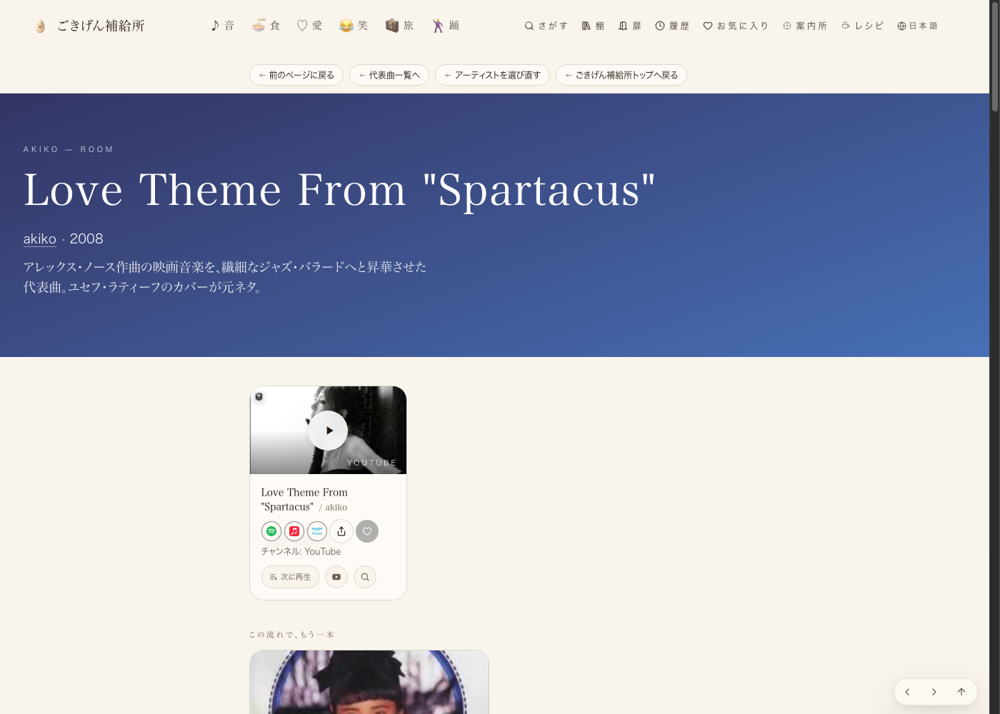
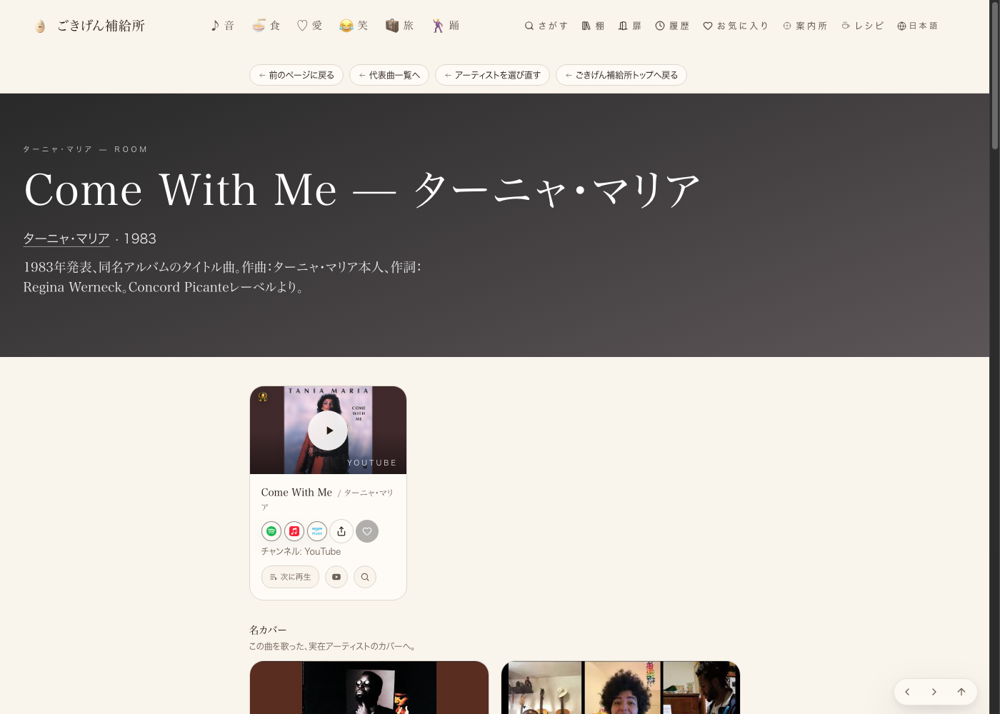
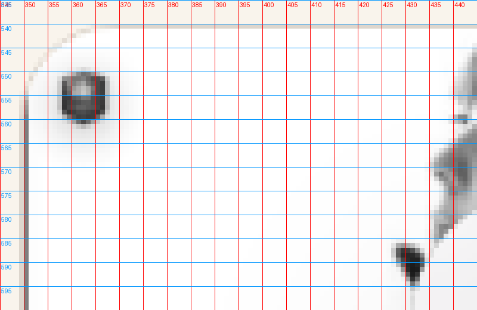
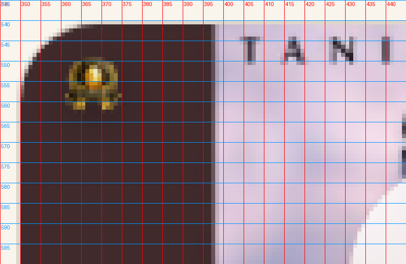

短辺の18%目標(実際は13.8%基準)という比率に変更。実装は既にmainに反映済みで、本番(joy-relief-station)で2ページを実際に開いてピクセル計測した。




| 確認項目 | 結果 |
|---|---|
| akikoページのバッジ高さ比率 | 12〜15%(目標13.8%) |
| Tania Mariaページのバッジ高さ比率 | 14.6%(目標13.8%) |
| 憲法の上限(短辺15〜20%)以内に収まっているか | 収まっている |